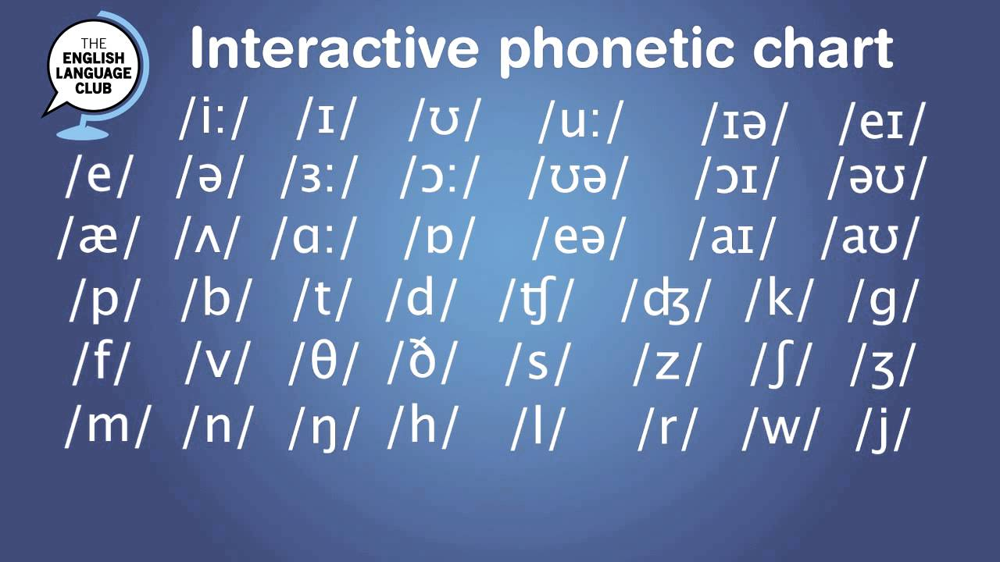

English sounds which are difficult for Ukrainians
A lot of people learn English today. English is a world language,
and everyone learns it today. It’s not that difficult to learn the grammar of a language,
but it might be difficult to sound as a native speaker of the language. in some languages as Ukrainian,
you pronounce the words as they are written. But sadly, in some languages you write a word in one way,
but pronounce it in another way.
This is what we call orthographic-phonetic inconsistency. Or phonetics for short.

Here is the table of English phonetics.
So which are some difficult once for Ukrainians?
***note that there are much more***
1stly we have got the “th” sound (for example Water),
because we don’t have this one in Ukrainian. So the right way of pronouncing it is /0/(11th in the table)
2ndly we have the “w” sound for example "water".
It might be quite similliar to Ukrainian “B” sound, but actually they are quite different. (24th in the table)
also there is a "v" sound for example "veteran" which is quite different from the "w" one , but probably closer to the Ukrainian "B"
hope you enjoyed it!